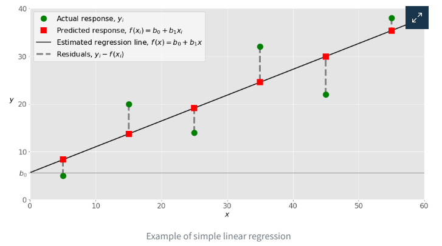

2. Linear Regression
Contents
2. Linear Regression¶
Introduction¶
You’re living in an era of large amounts of data, powerful computers, and artificial intelligence. This is just the beginning. Data science and machine learning are driving image recognition, development of autonomous vehicles, decisions in the financial and energy sectors, advances in medicine, the rise of social networks, and more. Linear regression is an important part of this.
Linear regression is one of the fundamental statistical and machine learning techniques. Whether you want to do statistics, machine learning, or scientific computing, there’s a good chance that you’ll need it. It’s best to build a solid foundation first and then proceed toward more complex methods.
By the end of this article, you’ll have learned:
What linear regression is
What linear regression is used for
How linear regression works
How to implement linear regression in Python, step by step
Regression¶
Regression analysis is one of the most important fields in statistics and machine learning. There are many regression methods available. Linear regression is one of them.
Regression searches for relationships among variables. For example, you can observe several employees of some company and try to understand how their salaries depend on their features, such as experience, education level, role, city of employment, and so on.
This is a regression problem where data related to each employee represents one observation. The presumption is that the experience, education, role, and city are the independent features, while the salary depends on them.
Similarly, you can try to establish the mathematical dependence of housing prices on area, number of bedrooms, distance to the city center, and so on.
Generally, in regression analysis, you consider some phenomenon of interest and have a number of observations. Each observation has two or more features. Following the assumption that at least one of the features depends on the others, you try to establish a relation among them.
In other words, you need to find a function that maps some features or variables to others sufficiently well.
The dependent features are called the dependent variables, outputs, or responses. The independent features are called the independent variables, inputs, regressors, or predictors.
Regression problems usually have one continuous and unbounded dependent variable. The inputs, however, can be continuous, discrete, or even categorical data such as gender, nationality, or brand.
It’s a common practice to denote the outputs with \(𝑦\) and the inputs with 𝑥. If there are two or more independent variables, then they can be represented as the vector \(𝐱\) = (𝑥₁, …, 𝑥ᵣ), where 𝑟 is the number of inputs.
Linear regression in a nutshell¶
A linear regression model searches for a linear relationship between inputs (features) and output (target).

Tutorial Introduction to Linear Regression
Problem formulation¶
Math Explained
When implementing linear regression of some dependent variable 𝑦 on the set of independent variables 𝐱 = (𝑥₁, …, 𝑥ᵣ), where 𝑟 is the number of predictors, you assume a linear relationship between 𝑦 and 𝐱: 𝑦 = 𝛽₀ + 𝛽₁𝑥₁ + ⋯ + 𝛽ᵣ𝑥ᵣ + 𝜀. This equation is the regression equation. 𝛽₀, 𝛽₁, …, 𝛽ᵣ are the regression coefficients, and 𝜀 is the random error.
Linear regression calculates the estimators of the regression coefficients or simply the predicted weights, denoted with 𝑏₀, 𝑏₁, …, 𝑏ᵣ. These estimators define the estimated regression function 𝑓(𝐱) = 𝑏₀ + 𝑏₁𝑥₁ + ⋯ + 𝑏ᵣ𝑥ᵣ. This function should capture the dependencies between the inputs and output sufficiently well.
The estimated or predicted response, 𝑓(𝐱ᵢ), for each observation 𝑖 = 1, …, 𝑛, should be as close as possible to the corresponding actual response 𝑦ᵢ. The differences 𝑦ᵢ - 𝑓(𝐱ᵢ) for all observations 𝑖 = 1, …, 𝑛, are called the residuals. Regression is about determining the best predicted weights—that is, the weights corresponding to the smallest residuals.
To get the best weights, you usually minimize the sum of squared residuals (SSR) for all observations 𝑖 = 1, …, 𝑛: SSR = Σᵢ(𝑦ᵢ - 𝑓(𝐱ᵢ))². This approach is called the method of ordinary least squares.
Machine Learning Perspective
A linear model makes a prediction by computing a weighted sum of the input features, plus a constant term called bias (or sometimes intercept).
\(y'\) is the model’s output (prediction).
\(n\) is the number of features for a data sample.
\(x_i, i \in [1..n]\) is the value of the \(i\)th feature.
\(\theta_i, i \in [0..n]\) is \(i\)th model parameter. \(\theta_0\) is the bias term.
The goal is to find the best set of parameters.
Video: Linear Regression Model
Simple Linear Regression¶
Simple or single-variate linear regression is the simplest case of linear regression, as it has a single independent variable, 𝐱 = 𝑥.
The following figure illustrates simple linear regression:

When implementing simple linear regression, you typically start with a given set of input-output (𝑥-𝑦) pairs. These pairs are your observations, shown as green circles in the figure. For example, the leftmost observation has the input 𝑥 = 5 and the actual output, or response, 𝑦 = 5. The next one has 𝑥 = 15 and 𝑦 = 20, and so on.
The estimated regression function, represented by the black line, has the equation 𝑓(𝑥) = 𝑏₀ + 𝑏₁𝑥. Your goal is to calculate the optimal values of the predicted weights 𝑏₀ and 𝑏₁ that minimize SSR and determine the estimated regression function.
The value of 𝑏₀, also called the intercept, shows the point where the estimated regression line crosses the 𝑦 axis. It’s the value of the estimated response 𝑓(𝑥) for 𝑥 = 0. The value of 𝑏₁ determines the slope of the estimated regression line.
The predicted responses, shown as red squares, are the points on the regression line that correspond to the input values. For example, for the input 𝑥 = 5, the predicted response is 𝑓(5) = 8.33, which the leftmost red square represents.
The vertical dashed grey lines represent the residuals, which can be calculated as 𝑦ᵢ - 𝑓(𝐱ᵢ) = 𝑦ᵢ - 𝑏₀ - 𝑏₁𝑥ᵢ for 𝑖 = 1, …, 𝑛. They’re the distances between the green circles and red squares. When you implement linear regression, you’re actually trying to minimize these distances and make the red squares as close to the predefined green circles as possible.
Regression Performance¶
The variation of actual responses 𝑦ᵢ, 𝑖 = 1, …, 𝑛, occurs partly due to the dependence on the predictors 𝐱ᵢ. However, there’s also an additional inherent variance of the output.
The coefficient of determination, denoted as 𝑅², tells you which amount of variation in 𝑦 can be explained by the dependence on 𝐱, using the particular regression model. A larger 𝑅² indicates a better fit and means that the model can better explain the variation of the output with different inputs.
The value 𝑅² = 1 corresponds to SSR = 0. That’s the perfect fit, since the values of predicted and actual responses fit completely to each other.
Example: using a linear model to predict country happiness¶
(Inspired by Homemade Machine Learning by Oleksii Trekhleb)
The World Happiness Report ranks 155 countries by their happiness levels. Several economic and social indicators (GDP, degree of freedom, level of corruption…) are recorded for each country.
Can a linear model accurately predict country happiness based on these indicators ?
Data loading and analysis¶
# Load World Happiness Report for 2017
dataset_url = "./data/2017.csv"
df_happiness = pd.read_csv(dataset_url)
# Print dataset shape (rows and columns)
print(f"Dataset shape: {df_happiness.shape}")
---------------------------------------------------------------------------
NameError Traceback (most recent call last)
<ipython-input-1-4e05e6bded9f> in <module>
1 # Load World Happiness Report for 2017
2 dataset_url = "./data/2017.csv"
----> 3 df_happiness = pd.read_csv(dataset_url)
4
5 # Print dataset shape (rows and columns)
NameError: name 'pd' is not defined
# Print a concise summary of the dataset
df_happiness.info()
<class 'pandas.core.frame.DataFrame'>
RangeIndex: 155 entries, 0 to 154
Data columns (total 12 columns):
# Column Non-Null Count Dtype
--- ------ -------------- -----
0 Country 155 non-null object
1 Happiness.Rank 155 non-null int64
2 Happiness.Score 155 non-null float64
3 Whisker.high 155 non-null float64
4 Whisker.low 155 non-null float64
5 Economy..GDP.per.Capita. 155 non-null float64
6 Family 155 non-null float64
7 Health..Life.Expectancy. 155 non-null float64
8 Freedom 155 non-null float64
9 Generosity 155 non-null float64
10 Trust..Government.Corruption. 155 non-null float64
11 Dystopia.Residual 155 non-null float64
dtypes: float64(10), int64(1), object(1)
memory usage: 14.7+ KB
# Show the 10 first samples
df_happiness.head(n=10)
| Country | Happiness.Rank | Happiness.Score | Whisker.high | Whisker.low | Economy..GDP.per.Capita. | Family | Health..Life.Expectancy. | Freedom | Generosity | Trust..Government.Corruption. | Dystopia.Residual | |
|---|---|---|---|---|---|---|---|---|---|---|---|---|
| 0 | Norway | 1 | 7.537 | 7.594445 | 7.479556 | 1.616463 | 1.533524 | 0.796667 | 0.635423 | 0.362012 | 0.315964 | 2.277027 |
| 1 | Denmark | 2 | 7.522 | 7.581728 | 7.462272 | 1.482383 | 1.551122 | 0.792566 | 0.626007 | 0.355280 | 0.400770 | 2.313707 |
| 2 | Iceland | 3 | 7.504 | 7.622030 | 7.385970 | 1.480633 | 1.610574 | 0.833552 | 0.627163 | 0.475540 | 0.153527 | 2.322715 |
| 3 | Switzerland | 4 | 7.494 | 7.561772 | 7.426227 | 1.564980 | 1.516912 | 0.858131 | 0.620071 | 0.290549 | 0.367007 | 2.276716 |
| 4 | Finland | 5 | 7.469 | 7.527542 | 7.410458 | 1.443572 | 1.540247 | 0.809158 | 0.617951 | 0.245483 | 0.382612 | 2.430182 |
| 5 | Netherlands | 6 | 7.377 | 7.427426 | 7.326574 | 1.503945 | 1.428939 | 0.810696 | 0.585384 | 0.470490 | 0.282662 | 2.294804 |
| 6 | Canada | 7 | 7.316 | 7.384403 | 7.247597 | 1.479204 | 1.481349 | 0.834558 | 0.611101 | 0.435540 | 0.287372 | 2.187264 |
| 7 | New Zealand | 8 | 7.314 | 7.379510 | 7.248490 | 1.405706 | 1.548195 | 0.816760 | 0.614062 | 0.500005 | 0.382817 | 2.046456 |
| 8 | Sweden | 9 | 7.284 | 7.344095 | 7.223905 | 1.494387 | 1.478162 | 0.830875 | 0.612924 | 0.385399 | 0.384399 | 2.097538 |
| 9 | Australia | 10 | 7.284 | 7.356651 | 7.211349 | 1.484415 | 1.510042 | 0.843887 | 0.601607 | 0.477699 | 0.301184 | 2.065211 |
# Plot histograms for all numerical attributes
df_happiness.hist(bins=20, figsize=(16, 12))
plt.show()
Univariate regression¶
Only one feature is used by the model, which has two parameters.
Environment setup¶
import platform
print(f"Python version: {platform.python_version()}")
assert platform.python_version_tuple() >= ("3", "6")
import numpy as np
import matplotlib.pyplot as plt
import seaborn as sns
import plotly
import plotly.graph_objs as go
import pandas as pd
print(f"seaborn version: {sns.__version__}")
# Setup plots
%matplotlib inline
plt.rcParams["figure.figsize"] = 10, 8
%config InlineBackend.figure_format = "retina"
sns.set()
# Configure Plotly to be rendered inline in the notebook.
plotly.offline.init_notebook_mode()
from sklearn import metrics
import warnings
warnings.filterwarnings("ignore")
import sklearn
print(f"scikit-learn version: {sklearn.__version__}")
assert sklearn.__version__ >= "0.20"
from sklearn.model_selection import train_test_split
from sklearn.linear_model import LinearRegression, SGDRegressor, Ridge
from sklearn.metrics import mean_squared_error
from sklearn.preprocessing import PolynomialFeatures, StandardScaler
from sklearn.pipeline import Pipeline
Example: predict country happiness using only GDP¶
def filter_dataset(df_data, input_features, target_feature):
"""Return a dataset containing only the selected input and output features"""
feature_list = input_features + [target_feature]
return df_data[feature_list]
# Define GDP as sole input feature
input_features_uni = ["Economy..GDP.per.Capita."]
# Define country happiness as target
target_feature = "Happiness.Score"
df_happiness_uni = filter_dataset(df_happiness, input_features_uni, target_feature)
# Show 10 random samples
df_happiness_uni.sample(n=10)
| Economy..GDP.per.Capita. | Happiness.Score | |
|---|---|---|
| 145 | 0.591683 | 3.593 |
| 57 | 0.833757 | 5.823 |
| 151 | 0.777153 | 3.462 |
| 131 | 0.894652 | 4.096 |
| 56 | 1.217684 | 5.825 |
| 112 | 0.234306 | 4.550 |
| 29 | 1.233748 | 6.452 |
| 94 | 0.783756 | 5.074 |
| 72 | 1.069318 | 5.395 |
| 31 | 1.127869 | 6.424 |
Data splitting¶
def split_dataset(df_data, input_features, target_feature):
"""Split dataset between training and test sets, keeping only selected features"""
df_train, df_test = train_test_split(df_data, test_size=0.2)
print(f"Training dataset: {df_train.shape}")
print(f"Test dataset: {df_test.shape}")
x_train = df_train[input_features].to_numpy()
y_train = df_train[target_feature].to_numpy()
x_test = df_test[input_features].to_numpy()
y_test = df_test[target_feature].to_numpy()
print(f"Training data: {x_train.shape}, labels: {y_train.shape}")
print(f"Test data: {x_test.shape}, labels: {y_test.shape}")
return x_train, y_train, x_test, y_test
x_train_uni, y_train_uni, x_test_uni, y_test_uni = split_dataset(
df_happiness_uni, input_features_uni, target_feature
)
Training dataset: (124, 2)
Test dataset: (31, 2)
Training data: (124, 1), labels: (124,)
Test data: (31, 1), labels: (31,)
Data plotting¶
def plot_univariate(x, y, input_features, target_features, model_list=None):
"""2D plot of features and target, including model prediction if defined"""
plt.scatter(x, y, label="Actual")
if model_list is not None:
predictions_count = 100
x_pred = np.linspace(x.min(), x.max(), predictions_count).reshape(
predictions_count, 1
)
for model_name, model in model_list.items():
y_pred = model.predict(x_pred)
plt.plot(x_pred, y_pred, "r", label=model_name)
plt.xlabel(input_features)
plt.ylabel(target_feature)
plt.title("Countries Happiness")
plt.legend()
# Plot training data
plot_univariate(x_train_uni, y_train_uni, input_features_uni, target_feature)
Analytical approach: normal equation¶
Video: Linear Regression in Matrix
Problem formulation¶
\(\pmb{x}^{(i)}\): \(i\)th data sample, vector of \(n+1\) features \(x^{(i)}_j\) with \(x^{(i)}_0 = 1\).
\(\pmb{\theta}\): parameters of the linear model, vector of \(n+1\) values \(\theta_j\).
\(\mathcal{h}_\theta\): hypothesis function (relationship between inputs and targets).
\(y'^{(i)}\): model output for the \(i\)th sample.
Loss function¶
We use the Mean Squared Error (MSE). RMSE is also a possible choice.
Analytical solution¶
Technique for computing the regression coefficients \(\theta_i\) analytically (by calculus).
One-step learning algorithm (no iterations).
Also called Ordinary Least Squares.
\(\pmb{\theta^*}\) is the parameter vector that minimizes the loss function \(\mathcal{L}(\theta)\).
This result is called the Normal Equation.
Math proof (optional)¶
(Inspired by Derivation of the Normal Equation for linear regression and ML From Scratch, Part 1: Linear Regression)
Vectorized notation¶
\(\pmb{X}\): matrix of input data (design matrix). Each line corresponds to a sample.
\(\pmb{y}\): vector of target values.
Vectorized loss¶
The loss can also be expressed using a vectorized notation.
The squared norm of a vector \(\pmb{v}\) is the inner product of that vector with its transpose: \(\sum_{i=1}^n v_i^2 = \pmb{v}^T \pmb{v}\).
The previous expression can be developped.
Since \(\pmb{X}\pmb{\theta}\) and \(\pmb{y}\) are vectors, \((\pmb{X}\pmb{\theta})^T\pmb{y} = \pmb{y}^T(\pmb{X}\pmb{\theta})\).
Loss gradient¶
We must find the \(\pmb{\theta^*}\) vector that minimizes the loss function \(\mathcal{L}(\theta)\).
Since the loss function is continuous, convex and differentiable everywhere (in simplest termes: bowl-shaped), it admits one unique global minimum, for which the gradient vector \(\nabla_{\theta}\mathcal{L}(\pmb{\theta})\) is equal to \(\vec{0}\).
Computation of loss gradient terms¶
Since \(\pmb{y}^T\pmb{y}\) is constant w.r.t. \(\pmb{\theta}\), \(\nabla_{\theta}(\pmb{y}^T\pmb{y}) = \vec{0}\).
Reminder: \(\forall i \in [1..m], x_0^{(i)} = 1\).
\(\pmb{X}^T\pmb{X}\) is a square and symmetric matrix called \(\pmb{A}\) here for simplicity of notation.
Since \(\pmb{A}\) is symmetric, \(\forall i,j \in [1..n,1..n], a_{ij} = a_{ji}\).
Final gradient expression¶
We can finally express the gradient of the loss function w.r.t. the model parameters:
Loss minimization¶
The \(\pmb{\theta^*}\) vector that minimizes the loss is such as the gradient is equal to \(\vec{0}\). In other terms:
If \(\pmb{X}^T\pmb{X}\) is an inversible matrix, the result is given by:
Which is exactly the Normal Equation we were expecting to see!
tutorial linear regression with example
Example: applying Normal Equation to predict country happiness¶
def train_model(model, x, y):
model.fit(x, y)#training model with all x y
print(f"Model weights: {model.coef_}, bias: {model.intercept_}")
error = mean_squared_error(y, model.predict(x))
print(f"Training error: {error:.05f}")
def test_model(model, x, y):
error = mean_squared_error(y, model.predict(x))
print(f"Test error: {error:.05f}")
# Create a Linear Regression model (based on Normal Equation)
lr_model = LinearRegression()
# Train and test the model on univariate data
train_model(lr_model, x_train_uni, y_train_uni)
test_model(lr_model, x_test_uni, y_test_uni)
Model weights: [2.11218002], bias: 3.2399565304753697
Training error: 0.41461
Test error: 0.51273
# Plot data and model prediction
plot_univariate(
x_train_uni,
y_train_uni,
input_features_uni,
target_feature,
model_list={"LR": lr_model},
)
Multivariate regression¶
General case: several features are used by the model.
# Using two input features: GDP and degree of freedom
input_features_multi = ["Economy..GDP.per.Capita.", "Freedom"]
x_train_multi, y_train_multi, x_test_multi, y_test_multi = split_dataset(
df_happiness, input_features_multi, target_feature
)
Training dataset: (124, 12)
Test dataset: (31, 12)
Training data: (124, 2), labels: (124,)
Test data: (31, 2), labels: (31,)
def plot_multivariate(x, y, input_features, target_features, model=None):
"""3D plot of features and target, including model prediction if defined"""
# Configure the plot with training dataset
plot_training_trace = go.Scatter3d(
x=x[:, 0].flatten(),
y=x[:, 1].flatten(),
z=y.flatten(),
name="Actual",
mode="markers",
marker={
"size": 10,
"opacity": 1,
"line": {"color": "rgb(255, 255, 255)", "width": 1},
},
)
plot_data = plot_training_trace
if model is not None:
# Generate different combinations of X and Y sets to build a predictions plane.
predictions_count = 10
# Find min and max values along X and Y axes.
x_min = x[:, 0].min()
x_max = x[:, 0].max()
y_min = x[:, 1].min()
y_max = x[:, 1].max()
# Generate predefined numbe of values for eaxh axis betwing correspondent min and max values.
x_axis = np.linspace(x_min, x_max, predictions_count)
y_axis = np.linspace(y_min, y_max, predictions_count)
# Create empty vectors for X and Y axes predictions
# We're going to find cartesian product of all possible X and Y values.
x_pred = np.zeros((predictions_count * predictions_count, 1))
y_pred = np.zeros((predictions_count * predictions_count, 1))
# Find cartesian product of all X and Y values.
x_y_index = 0
for x_index, x_value in enumerate(x_axis):
for y_index, y_value in enumerate(y_axis):
x_pred[x_y_index] = x_value
y_pred[x_y_index] = y_value
x_y_index += 1
# Predict Z value for all X and Y pairs.
z_pred = model.predict(np.hstack((x_pred, y_pred)))
# Plot training data with predictions.
# Configure the plot with test dataset.
plot_predictions_trace = go.Scatter3d(
x=x_pred.flatten(),
y=y_pred.flatten(),
z=z_pred.flatten(),
name="Prediction Plane",
mode="markers",
marker={"size": 1,},
opacity=0.8,
surfaceaxis=2,
)
plot_data = [plot_training_trace, plot_predictions_trace]
# Configure the layout.
plot_layout = go.Layout(
title="Date Sets",
scene={
"xaxis": {"title": input_features[0]},
"yaxis": {"title": input_features[1]},
"zaxis": {"title": target_feature},
},
margin={"l": 0, "r": 0, "b": 0, "t": 0},
)
plot_figure = go.Figure(data=plot_data, layout=plot_layout)
# Render 3D scatter plot.
plotly.offline.iplot(plot_figure)
# Plot training data
plot_multivariate(x_train_multi, y_train_multi, input_features_multi, target_feature)
# Create a Linear Regression model (based on Normal Equation)
lr_model_multi = LinearRegression()
# Train and test the model on multivariate data
train_model(lr_model_multi, x_train_multi, y_train_multi)
test_model(lr_model_multi, x_test_multi, y_test_multi)
Model weights: [1.91149998 2.16361139], bias: 2.5932961237511147
Training error: 0.35373
Test error: 0.21432
# Plot data and model prediction
plot_multivariate(x_train_multi, y_train_multi, input_features_multi, target_feature, lr_model_multi)
Pros/cons of analytical approach¶
Pros:
Computed in one step.
Exact solution.
Cons:
Computation of \((\pmb{X}^T\pmb{X})^{-1}\) is slow when the number of features is large (\(n > 10^4\)).
Doesn’t work if \(\pmb{X}^T\pmb{X}\) is not inversible.
Iterative approach: gradient descent¶
Method description¶
Same objective: find the \(\pmb{\theta}^{*}\) vector that minimizes the loss.
General idea:
Start with random values for \(\pmb{\theta}\).
Update \(\pmb{\theta}\) in small steps towards loss minimization.
To know in which direction update \(\pmb{\theta}\), we compute the gradient of the loss function w.r.t. \(\pmb{\theta}\) and go into the opposite direction.
Computation of gradients¶
(See math proof above)
Parameters update¶
The learning rate \(\eta\) governs the amplitude of updates.

Interactive example¶

Gradient descent types¶
Batch: use the whole dataset to compute gradients.
Safe but potentially slow.
Stochastic: use only one sample.
Fast but potentially erratic.
Mini-Batch: use a small set of samples (10-1000).
Good compromise.
Example: applying stochastic gradient descent to predict country happiness¶
# Create a Linear Regression model (based on Stochastic Gradient Descent)
sgd_model_uni = SGDRegressor()
# Train and test the model on univariate data
train_model(sgd_model_uni, x_train_uni, y_train_uni)
test_model(sgd_model_uni, x_test_uni, y_test_uni)
Model weights: [2.53591725], bias: [2.5963995]
Training error: 0.50506
Test error: 0.58853
# Plot data and models predictions
plot_univariate(
x_train_uni,
y_train_uni,
input_features_uni,
target_feature,
model_list={"LR": lr_model, "SGD": sgd_model_uni},
)
Pros/cons of iterative approach¶
Pros:
Works well with a large number of features.
MSE loss function convex => guarantee of a global minimum.
Cons:
Convergence depends on learning rate and GD type.
Dependant on feature scaling.
Polynomial Regression¶
General idea¶
How can a linear model fit non-linear data?
Solution: add powers of each feature as new features.
The hypothesis function is still linear.
High-degree polynomial regression can be subject to severe overfitting.
Example: fitting a quadratic curve with polynomial regression¶
(Heavily inspired by Chapter 4 of Hands-On Machine Learning by Aurélien Géron)
# Generate quadratic data with noise
# (ripped from https://github.com/ageron/handson-ml2)
m = 200
# Generate m data samples between -3 and 3
x_quad = 6 * np.random.rand(m, 1) - 3
# y = 0,5x^2 + x + 2 + noise
y_quad = 0.5 * x_quad**2 + x_quad + 2 + np.random.randn(m, 1)
# Plot generated data
plt.plot(x_quad, y_quad, "b.")
plt.title("Quadratic data")
plt.show()
print(f"Initial feature for first sample: {x_quad[0]}")
# Add polynomial features to the dataset
poly_degree = 2
poly_features = PolynomialFeatures(degree=poly_degree, include_bias=False)
x_quad_poly = poly_features.fit_transform(x_quad)
print(f"New features for first sample: {x_quad_poly[0]}")
Initial feature for first sample: [1.80326168]
New features for first sample: [1.80326168 3.25175268]
# Fit a linear regression model to the extended data
lr_model_poly = LinearRegression()
lr_model_poly.fit(x_quad_poly, y_quad)
# Should be close to [1, 0,5] and 2
print(f"Model weights: {lr_model_poly.coef_}, bias: {lr_model_poly.intercept_}")
Model weights: [[0.99406219 0.49278801]], bias: [1.97885369]
# Plot data and model prediction
plt.plot(x_quad, y_quad, "b.", label="Data")
x_pred = np.linspace(-3, 3, m).reshape(m, 1)
x_pred_poly = poly_features.transform(x_pred)
y_pred = lr_model_poly.predict(x_pred_poly)
plt.plot(x_pred, y_pred, "r-", linewidth=2, label="Prediction")
plt.axis([-3, 3, 0, 10])
plt.legend()
plt.title("Quadratic data w/ prediction")
plt.show()
Regularization¶
General idea¶
Solution against overfitting: constraining model parameters to take small values.
Ridge regression (using l2 norm):
Lasso regression (using l1 norm):
\(\lambda\) is called the regularization rate.
Example: observing the effects of regularization rate¶
(Heavily inspired by Chapter 4 of Hands-On Machine Learning by Aurélien Géron)
m = 20
x_reg = 3 * np.random.rand(m, 1)
y_reg = 1 + 0.5 * x_reg + np.random.randn(m, 1) / 1.5
x_new = np.linspace(0, 3, 100).reshape(100, 1)
def plot_model(model_class, polynomial, lambdas, **model_kargs):
# Plot data and predictions for several regularization rates
for reg_rate, style in zip(lambdas, ("b-", "g--", "r:")):
model = model_class(reg_rate, **model_kargs) if reg_rate > 0 else LinearRegression()
if polynomial:
model = Pipeline([
("poly_features", PolynomialFeatures(degree=10, include_bias=False)),
("std_scaler", StandardScaler()),
("regul_reg", model),
])
model.fit(x_reg, y_reg)
y_new_regul = model.predict(x_new)
lw = 2 if reg_rate > 0 else 1
plt.plot(x_new, y_new_regul, style, linewidth=lw, label=r"$\lambda = {}$".format(reg_rate))
plt.plot(x_reg, y_reg, "b.", linewidth=3)
plt.legend(loc="upper left", fontsize=15)
plt.xlabel("$x$", fontsize=18)
plt.axis([0, 3, 0, 4])
# Plot data and predictions with varying regularization rates
plt.figure(figsize=(14,7))
plt.subplot(121)
plot_model(Ridge, polynomial=False, lambdas=(0, 10, 100), random_state=42)
plt.ylabel("$y$", rotation=0, fontsize=18)
plt.title("Linear regression with Ridge regularization")
plt.subplot(122)
plot_model(Ridge, polynomial=True, lambdas=(0, 10**-5, 1), random_state=42)
plt.title("Polynomial regression with Ridge regularization")
plt.show()